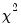
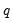
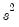
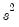

The view displays the coefficient estimates, the standardized coefficient estimates and the elasticity at means. The standardized coefficients are the point estimates of the coefficients standardized by multiplying by the standard deviation of the regressor divided by the standard deviation of the dependent variable.
The view displays a table of confidence intervals for each of the coefficients in the equation.
The dialog allows you to enter the size of the confidence levels. These can be entered a space delimited list of decimals, or as the name of a scalar or vector in the workfile containing confidence levels. You can also choose how you would like to display the confidence intervals. By default they will be shown in pairs where the low and high values for each confidence level are shown next to each other. By unchecking the checkbox you can choose to display the confidence intervals concentrically.
The view plots the joint confidence region of any two functions of estimated parameters from an EViews estimation object. Along with the ellipses, you can choose to display the individual confidence intervals.
We motivate our discussion of this view by pointing out that the Wald test view () allows you to test restrictions on the estimated coefficients from an estimation object. When you perform a Wald test, EViews provides a table of output showing the numeric values associated with the test.
To display confidence ellipses in EViews, simply select from the estimation object toolbar. EViews will display a dialog prompting you to specify the coefficient restrictions and test size, and to select display options.
Lastly, we choose a display option for the individual confidence intervals. If you select or , EViews will mark the confidence interval for each restriction, allowing you to see, at a glance, the individual results. will display the individual confidence intervals as dotted lines; will display the confidence intervals as a shaded region. If you select , EViews will not display the individual intervals.
The individual intervals are two-sided intervals based on either the t-distribution (in the cases where is computed using the
F-distribution), or the normal distribution (where

is taken from the

distribution).
(VIFs) are a method of measuring the level of collinearity between the regressors in an equation. VIFs show how much of the variance of a coefficient estimate of a regressor has been inflated due to collinearity with the other regressors. They can be calculated by simply dividing the variance of a coefficient estimate by the variance of that coefficient had other regressors not been included in the equation.
where  is the j
is the j-th eigenvalue, and is the (
i,
j)-th element of

.
We term the j-th condition number of the covariance matrix,

:
To view the coefficient variance decomposition in EViews, select . EViews will then display a table showing the Eigenvalues, Condition Numbers, corresponding Variance Decomposition Proportions and, for comparison purposes, the corresponding Eigenvectors.
To carry out a Wald test, choose from the equation toolbar. Enter the restrictions into the edit box, with multiple coefficient restrictions separated by commas. The restrictions should be expressed as equations involving the estimated coefficients and constants. The coefficients should be referred to as C(1), C(2), and so on, unless you have used a different coefficient vector in estimation.
and click OK. EViews reports the following result of the Wald test:
EViews reports an F-statistic and a Chi-square statistic with associated
p-values. In cases with a single restriction, EViews reports the
t-statistic equivalent of the
F-statistic. See
“Wald Test Details” for a discussion of these statistics. In addition, EViews reports the value of the normalized (homogeneous) restriction and an associated standard error. In this example, we have a single linear restriction so the
F-statistic and Chi-square statistic are identical, with the
p-value indicating that we can decisively reject the null hypothesis of constant returns to scale.
then select and then estimate the following specification:
To test the nonlinear restriction , choose from the equation toolbar and type the following restriction in the Wald Test dialog box:
We focus on the p-values for the statistics which show that we fail to reject the null hypothesis. Note that EViews reports that it used the delta method (with analytic derivatives) to compute the Wald restriction variance for the nonlinear restriction.
where is the vector of residuals from the restricted regression. In this case, the F-statistic compares the residual sum of squares computed with and without the restrictions imposed.
We remind you that the expression for the finite sample F-statistic in
(26.17) is for standard linear regression, and is not valid for more general cases (nonlinear models, ARMA specifications, or equations where the variances are estimated using other methods such as Newey-West or White). In non-standard settings, the reported
F-statistic (which EViews always computes as ), does not possess the desired finite-sample properties. In these cases, while asymptotically valid,
F-statistic (and corresponding
t-statistic) results should be viewed as illustrative and for comparison purposes only.
The output from the test is an F-statistic and a likelihood ratio (LR) statistic with associated
p-values, together with the estimation results of the unrestricted model under the alternative. The
F-statistic is based on the difference between the residual sums of squares of the restricted and unrestricted regressions and is only valid in linear regression based settings. The LR statistic is computed as:
To test for omitted variables, select In the dialog that opens, list the names of the test variables, each separated by at least one space. Suppose, for example, that the initial regression specification is:
The F-statistic has an exact finite sample
F-distribution under

for linear models if the errors are independent and identically distributed normal random variables. The numerator degrees of freedom is the number of additional regressors and the denominator degrees of freedom is the number of observations less the total number of regressors. The log likelihood ratio statistic is the LR test statistic and is asymptotically distributed as a

with degrees of freedom equal to the number of added regressors.
To test for redundant variables, select In the dialog that appears, list the names of each of the test variables, separated by at least one space. Suppose, for example, that the initial regression specification is:
The reported test statistics are the F-statistic and the Log likelihood ratio. The
F-statistic has an exact finite sample
F-distribution under

if the errors are independent and identically distributed normal random variables and the model is linear. The numerator degrees of freedom are given by the number of coefficient restrictions in the null hypothesis. The denominator degrees of freedom are given by the total regression degrees of freedom. The LR test is an asymptotic test, distributed as a with degrees of freedom equal to the number of excluded variables under

. In this case, there are two degrees of freedom.
EViews reports three test statistics for the Factor Breakpoint test. The F-statistic is based on the comparison of the restricted and unrestricted sum of squared residuals and in the simplest case involving two subsamples, is computed as:
From this equation we can investigate whether the coefficient estimates on the wage equation differ by union membership and marriage status by using the UNION and MARRIED variables in a factor breakpoint test. To apply the breakpoint test, push on the equation toolbar. In the dialog that appears, list the series that will be used to classify the equation into subsamples. Since UNION contains values representing either union or non-union and MARRIED contains values for married and single, entering “union married” will specify 4 subsamples: non-union/married, non-union/single, union/married, and union/single. In the bottom portion of the dialog we indicate the names of the regressors that should be allowed to vary across breakpoints. By default, all of the variables will be allowed to vary.


is a smooth function, , imposing  restrictions on
. The Wald statistic is then computed as:

is a known matrix, and
is a
-vector, respectively. The Wald statistic in Equation (26.12) reduces to:
,
is the total number of observations, and
is the number of parameters in the equation. This formula can be generalized naturally to more than two subsamples. The F-statistic has an exact finite sample F-distribution if the errors are independent and identically distributed normal random variables.
From this equation we can investigate whether the coefficient estimates on the wage equation differ by union membership and marriage status by using the UNION and MARRIED variables in a factor breakpoint test. To apply the breakpoint test, push View/Coefficient Diagnostics/Factor Breakpoint Test… on the equation toolbar. In the dialog that appears, list the series that will be used to classify the equation into subsamples. Since UNION contains values representing either union or non-union and MARRIED contains values for married and single, entering “union married” will specify 4 subsamples: non-union/married, non-union/single, union/married, and union/single. In the bottom portion of the dialog we indicate the names of the regressors that should be allowed to vary across breakpoints. By default, all of the variables will be allowed to vary. joint confidence ellipse is defined as the set of points
joint confidence ellipse is defined as the set of points  such that:
such that: , and
, and  is the size
is the size  critical value for the related distribution. If the parameter estimates are least-squares based, the
critical value for the related distribution. If the parameter estimates are least-squares based, the  distribution is used; if the parameter estimates are likelihood based, the
distribution is used; if the parameter estimates are likelihood based, the  distribution will be employed.
distribution will be employed. is a diagonal matrix containing the eigenvalues of , and
is a diagonal matrix containing the eigenvalues of , and  is a matrix whose columns are equal to the corresponding eigenvectors.
is a matrix whose columns are equal to the corresponding eigenvectors. , rather than .
, rather than . ,
,  and
and  denote value-added output and the inputs of capital and labor respectively. The hypothesis of constant returns to scale is then tested by the restriction: .
denote value-added output and the inputs of capital and labor respectively. The hypothesis of constant returns to scale is then tested by the restriction: . . This is an example of a nonlinear restriction. To estimate the (unrestricted) nonlinear model, you may initialize the parameters using the command
. This is an example of a nonlinear restriction. To estimate the (unrestricted) nonlinear model, you may initialize the parameters using the command may equivalently be written as or
may equivalently be written as or  (for nonzero
(for nonzero  and ). For example, entering the restriction as,
and ). For example, entering the restriction as, and
and  are
are  -vectors and
-vectors and  is a
is a  -vector of parameters to be estimated. Any restrictions on the parameters can be written as:
-vector of parameters to be estimated. Any restrictions on the parameters can be written as: is the number of observations and
is the number of observations and  is the vector of unrestricted parameter estimates, and where
is the vector of unrestricted parameter estimates, and where  is an estimate of the
is an estimate of the  covariance. In the standard regression case, is given by:
covariance. In the standard regression case, is given by: is the vector of unrestricted residuals, and  is the usual estimator of the unrestricted residual variance, , but the estimator of
is the vector of unrestricted residuals, and  is the usual estimator of the unrestricted residual variance, , but the estimator of  may differ. For example, may be a robust variance matrix estimator computing using White or Newey-West techniques.
may differ. For example, may be a robust variance matrix estimator computing using White or Newey-West techniques. , the Wald statistic has an asymptotic distribution, where
, the Wald statistic has an asymptotic distribution, where  is the number of restrictions under
is the number of restrictions under  .
.  under
under  .
.  are independent and identically normally distributed, we have an exact, finite sample
are independent and identically normally distributed, we have an exact, finite sample  is that the additional set of regressors are not jointly significant.
is that the additional set of regressors are not jointly significant.  , the LR statistic has an asymptotic
, the LR statistic has an asymptotic  distribution with degrees of freedom equal to the number of restrictions (the number of added variables).
distribution with degrees of freedom equal to the number of restrictions (the number of added variables). distribution with degrees of freedom equal to
distribution with degrees of freedom equal to  under the null hypothesis of no structural change, where
under the null hypothesis of no structural change, where  is the number of subsamples.
is the number of subsamples. distribution with degrees of freedom, where
distribution with degrees of freedom, where  is the number of subsamples.
is the number of subsamples.